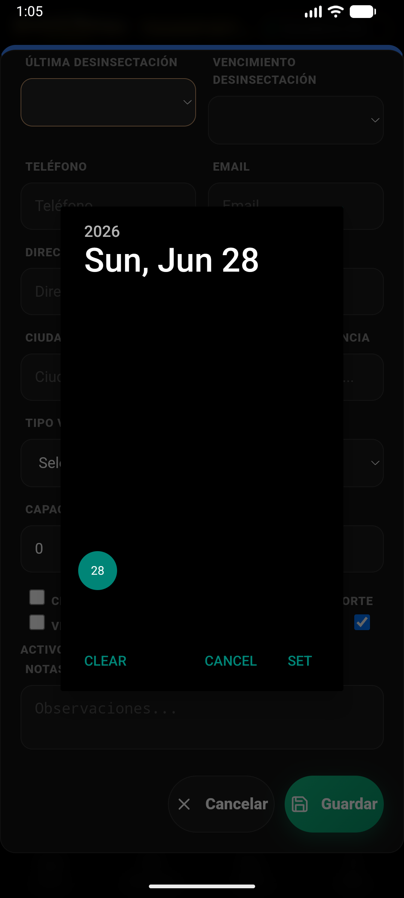
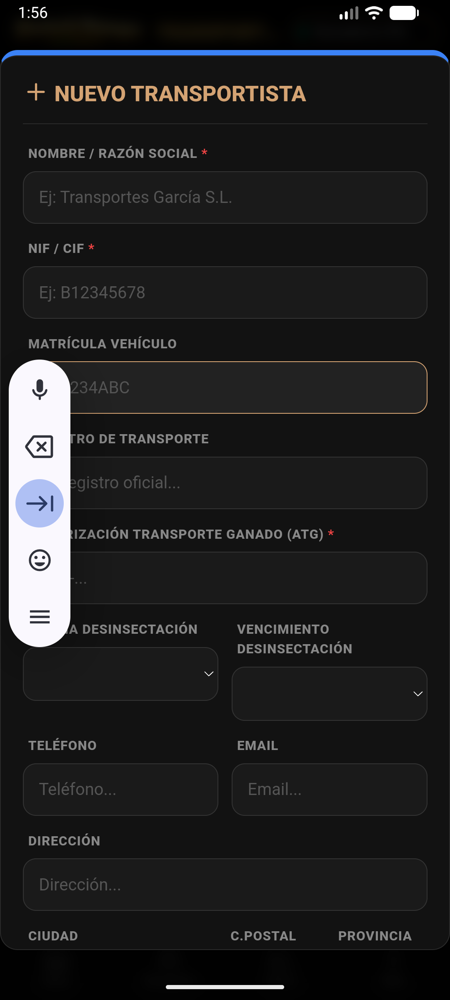

1. Acceso Rápido desde ExPro
El control de peso es fundamental para la rentabilidad cárnica. Accede desde el Hub ExPro.

En ExPro (Modo Carne), pulsa el botón "Registrar Peso (kg)".
- Asistente de Producción: Al pulsar el botón, se abre un buscador inteligente de animales.
- Selección: Busca al animal por crotal o selecciónalo de la lista de recientes.
2. Registro de Pesada
Introduce el peso y obtén resultados instantáneos.

Formulario de entrada de peso con teclado numérico optimizado.
- Valor Neto: Escribe el peso actual en kilogramos.
- Cálculo de GMD: La app comparará este peso con el anterior y te mostrará la Ganancia Media Diaria automáticamente.
- Historial: El pesaje se guarda en la línea de vida del animal y actualiza los KPIs del Dashboard.
Livestock Manager Premium · v4.8.0 · Guía de Pesajes